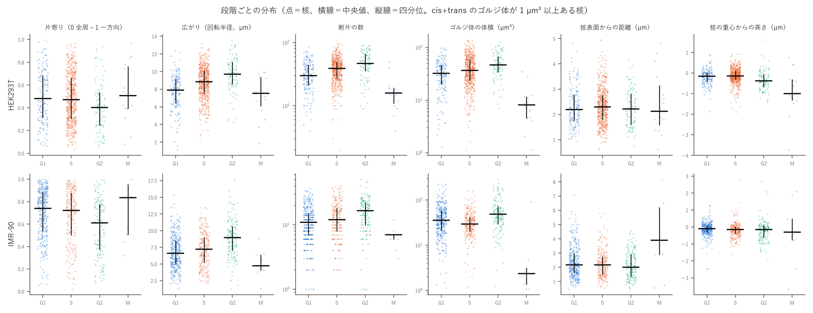

BMB2026 · Late-breaking Abstract · ポスター 2LBA-0032 の補足 / Supplementary page
代表の核の 3D 表示。ドラッグで回転、ピンチ／ホイールで拡大。
3D view of representative nuclei. Drag to rotate, pinch or scroll to zoom.
HEK293T・IMR-90。細胞周期の段階は 20x の DNA 量（Hoechst）と EdU で G1・S・G2M に分け、G2M は DAPI の凝縮で G2（間期）と M（分裂期）に分けた。60x 水浸（NA 1.27）の Z スタック、0.125 µm 間隔。cis と trans がそろう構造だけをゴルジ体とした。各段階の代表は、指標が段階の中央値に最も近い核を規則で選んだ。床の格子は 5 µm。
Unpublished data. Please do not redistribute.（未発表データです。転載しないでください）

点は核、横線は中央値、縦線は四分位。cis+trans のゴルジ体が 1 µm³ 以上ある核。片寄り＝核の重心から見たゴルジ体の方位の集中度（0 全周、1 一方向）。広がり＝ゴルジ体の回転半径。断片の数＝つながった cis+trans の構造の数。距離＝ゴルジ体から割り当てた核の表面までの距離の平均。
Dots, nuclei; horizontal bar, median; vertical bar, interquartile range. Polarity: directional concentration of the Golgi around the nuclear centroid (0, all around; 1, one side). Spread: radius of gyration of the Golgi.